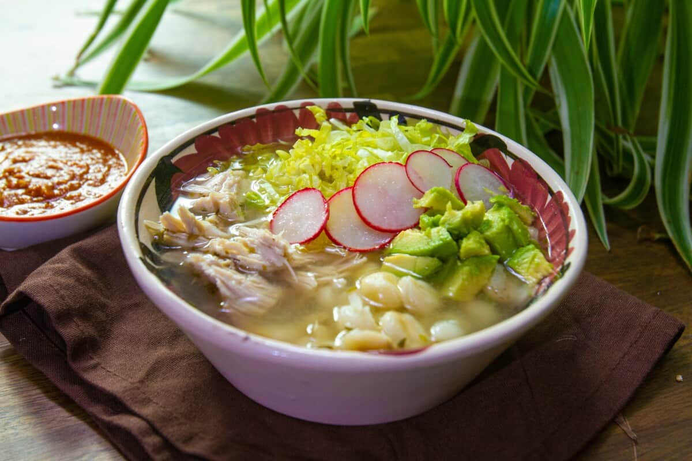

Receta de Pozole

Ingredientes:
500g de granos de maiz nixtamalizado
500g de carne de cerdo(espaldilla o costilla),o pollo
3-4 chiles guajillo y/o ancho
1 cebolla
3 dientes de ajo
Guarniciones
leucha o repollo finamente picado
Rabanos en rodajas
Cebolla picada
Oregano seco
Limon en cuartos
Tostadas o totopos
Preparación:
1.- Cocer el maiz
*En una olla con agua, cocina el maiz 1 hora o hasta que reviente ligeramente
2.- Preparar el caldo rojo/verde
Asa chiles, remojalos 15 min y licua con ajo y cebolla; cuela la mezcla
3.- Cocinar la carne
En otra olla, hierve la carne con sal, ajo y media cebolla hasta que este suave (1-1 1/2h)
4.- Unir maiz, carne y salsa
Agregar la salsa al maiz, añade la carne deshebrada y cocina 10 min mas para integrar sabores
5.- Servir
Ofrece el pozole en tazones; deja que cada quien agregue guarniciones al gusto
← Volver al recetario
↑
Pozole
Tacos
Enchiladas
Tamales
Mole